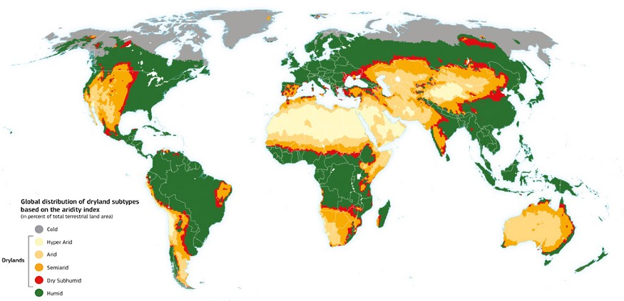
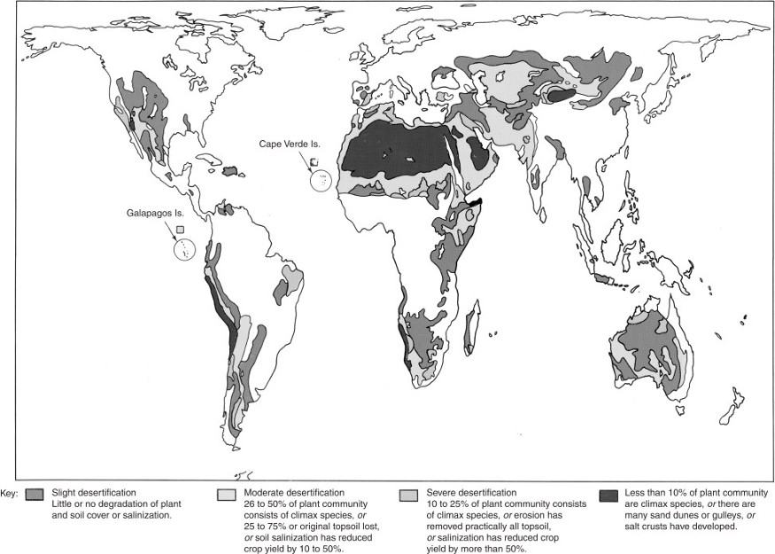

Desertification is a form of degradation that occurs on dry lands, which results in the loss of biological productivity. Desertification causes another type of biome to turn into a desert biome because of changes of all sorts. The word 'desert' itself is derived from the Latin word 'desertus', which has the meaning, 'to desert,' 'to abandon.' The clear implication is that a desert is an area too barren and desolate to support human life. The term 'desertification' was almost abandoned and was supposed to be replaced by the term, 'land degradation', because it gave only a vague idea about the issue. But since the term already got out there and was already a commonly used term, it was kept. The term 'land degradation' itself is considered as a vague term because, a land can be degraded so that it's function is changed.
According to the United Nations Environmental Program, all areas of land in which the ratio of total annual precipitation to potential evapotranspiration ranges from 0.05 to 0.65 should be considered vulnerable to desertification. Such regions constitute some 40% of the global terrestrial area.
A huge issue that many countries have is the fact that there are large pockets of land that are going through the process of desertification. Desertification changes the land's vegetation and it makes it unable to support life and the area becomes like a desert. An area becomes desertified due to climatic variations and human interference. About half of the Earth's ice-free land surface is drylands, and these drylands cover some of the world's poorest countries. Desertification is a major international concern. It has affected 36 million square kilometre of land.
According to the United Nations Convention to Combat Desertification, the lives of 250 million people are affected by desertification, and as many as 135 million people may be displaced by desertification by 2045, making it one of the most severe environmental challenges facing humanity. The UNEP sponsored projects in the early 1980s to plant trees along the edge of the Sahara, with the aim of warding off the invading sands. While there are places where the edge of the desert can be seen encroaching on fertile land, the more pressing problem is the deterioration of the land due to human abuse in regions well outside the desert.
An area's resemblance to a desert does not make it a permanent desert if it can recover from its damaged state, and, in any case, the modes of human subsistence and levels of consumption differ greatly from place to place.